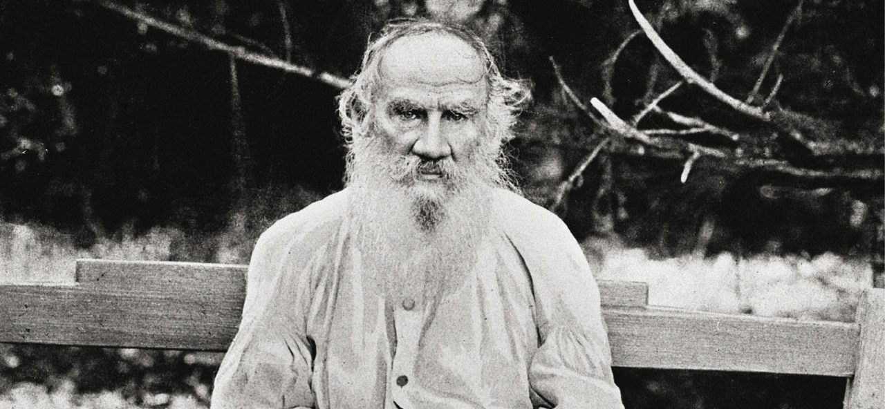

Лев Николаевич Толстой

Лев Толстой в Ясной Поляне, 28 августа 1903, Тульская губ.., дер. Ясная Поляна Фото Протасевич Франц Трофимович
Основные даты жизни и творчества Л.Н. Толстого:
- 1828, 28 августа (9 сентября) – родился в имении Ясная Поляна Крапивинского уезда Тульской губернии в дворянской семье.
- 1844 – поступление в Казанский университет на восточный факультет, затем учеба на юридическом. Стремление постичь и понять мир – увлечение философией, изучение взглядов Руссо.
- 1847 – переезд в Ясную Поляну (без окончания университетского курса). Мучительные поиски смысла жизни. Проба пера – первые литературные наброски.
- 1851 – написан рассказ «История вчерашнего дня». Начата повесть «Детство» (окончена в июле 1852 года). Отъезд на Кавказ на войну с горцами. Испытание самого себя. Война – осмысление пути формирования человека.
- 1854 – повесть "Отрочество". Главный вопрос – каким надо быть? К чему стремиться? Процесс умственного и нравственного развития человека. Севастопольская эпопея. Перевод в Дунайскую армию, в сражающийся Севастополь после неудачного прошения об отставке.
- 1856, ноябрь – увольнение из военной службы по личному прошению. "Утро помещика" (главное зло – жалкое, бедственное положение мужиков).
- 1859 – открытие школы в Ясной Поляне. Мысль о воспитании нового человека, создание "Азбуки" и книг для детей.
- 1862, сентябрь на Софье Андреевне Берс; переезд в Ясную Поляну.
- 1863–1869 – работа над романом-эпопеей "Война и мир".
- 1873–1877 – работа над романом "Анна Каренина". Счастье личное и счастье народное. Жизнь семьи и жизнь России.
- 1881 – переезд в Москву. Отречение от жизни дворянского круга. "Исповедь" (1879–1882).
- 1891–1893 – организация помощи голодающим крестьянам Рязанской губернии. Статьи о голоде.
- 1901, 24 февраля – официальное отлучение от церкви. В связи с болезнью отъезд в Крым, в Гаспру.
- 1910, (ночь с 27 на 28 октября) – уход из Ясной Поляны.
- 1910, 7(20) ноября – умер на станции Астапово, похоронен в Ясной Поляне.
«Толстой для нас больше, чем великий писатель. Он - как бы живой, облеченный в плоть и кровь символ достоинства печатного слова».
Русское богатство. - 1902. - № 8. Н. К. Михайловский
Если у вас есть время, настоятельно рекомендую вам ознакомиться с биографией Л.Н. Толстого на сайте Wikipedia